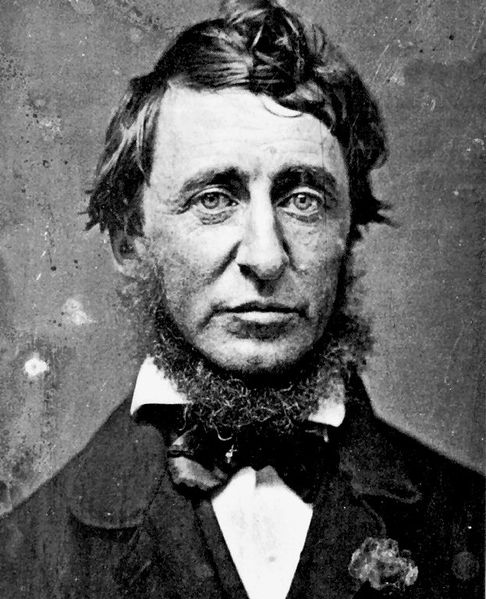

Henry David Thoreau
A trancendentalist, Thoreau spent two years living on the property of
friend and mentor, Emerson. It was his experience there that became the
fodder for his most famous writing, appropriately named for the body of
water on the property. He also wrote a famous essay, "Resistance to
Civil Government," in which he discussed taxes, among other things.
